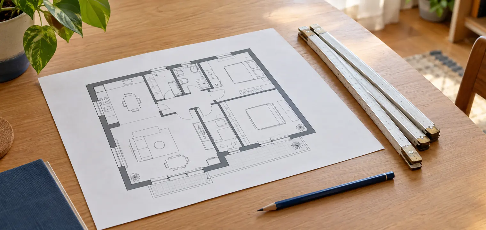
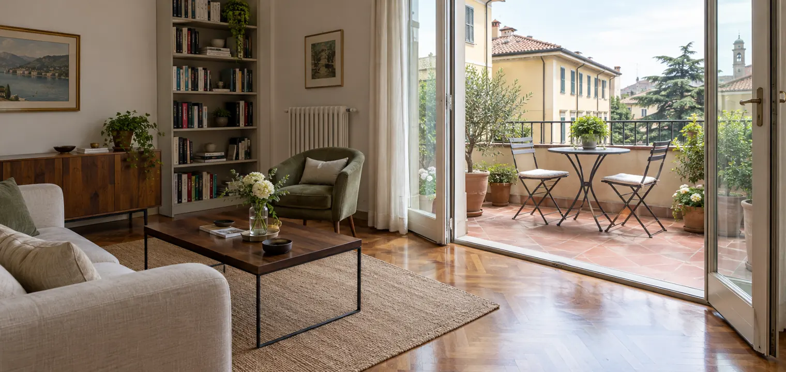
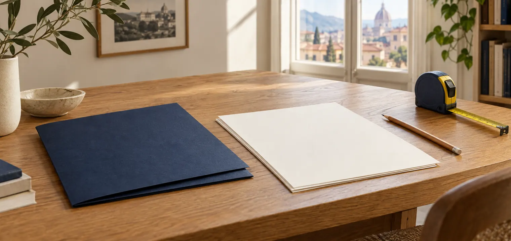

Nell'annuncio leggi una metratura, nella visura catastale ne trovi un'altra e misurando le stanze ne ottieni una terza. Prima di concludere che ci sia un errore, controlla che i numeri descrivano la stessa cosa. Per chi vende a Padova e Limena, chiarire questo punto aiuta a presentare la casa senza equivoci e a confrontare i prezzi con un criterio leggibile.
La risposta in breve
Non esiste un numero da scegliere solo perché è il più alto. Ogni superficie deve essere accompagnata dal suo nome, dalla fonte e dal criterio di calcolo. La superficie catastale segue regole proprie; una metratura usata nell'annuncio va spiegata; la misura interna delle stanze non è automaticamente equivalente alle altre due.
Cosa può fare Righetto
Preparare il confronto tra documenti, chiarire quali dati sono disponibili e organizzare i passaggi necessari prima della presentazione della casa. Le verifiche tecniche restano al professionista competente.
Un passo successivo: raccogli le diverse metrature e chiedi a Gino un confronto sui dati da chiarire prima della vendita.
Perché annuncio e visura possono avere metri quadri diversi?
Due numeri diversi non dimostrano, da soli, né un errore né una difformità. Possono riferirsi a perimetri diversi: soli ambienti interni, muri compresi, pertinenze considerate in parte, oppure un'intera unità catastale. Il primo controllo non è la sottrazione tra i totali, ma la descrizione di ciò che ciascun totale contiene.
La guida dell'Agenzia delle Entrate alla visura catastale distingue la superficie totale e, per le categorie del gruppo A, la superficie totale escluse le aree scoperte. Anche dentro lo stesso documento, quindi, possono comparire due superfici con significati diversi. Leggere solo il numero, saltando la dicitura, toglie l'informazione che permette di interpretarlo.
Per il proprietario la domanda utile è semplice: sto confrontando lo stesso oggetto con lo stesso criterio? Un annuncio che comprende anche una pertinenza non si confronta direttamente con la misura del pavimento dell'appartamento. Prima si separano le componenti, poi si valuta se la differenza sia spiegabile.
Fonte: Agenzia delle Entrate, La visura catastale, novembre 2025.
| Dato | Controllo prima del confronto |
|---|---|
| Superficie in visura | Leggi la dicitura completa e verifica a quale unità si riferisce. |
| Metratura dell’annuncio | Chiedi quali componenti comprende e il criterio di calcolo. |
| Misura interna | Chiarisci gli ambienti misurati e il metodo: non convertirla con una percentuale fissa. |

Che cosa significa superficie catastale?
La superficie catastale è un dato determinato secondo criteri normativi, non la semplice somma dello spazio su cui si può camminare. La guida alla visura rinvia al DPR 138/1998. Nell'Allegato C il calcolo considera muri e diverse componenti dell'immobile secondo regole specifiche. Non è quindi corretto trattarla come una misura interna netta.
Per le abitazioni, la dicitura relativa all'esclusione delle aree scoperte riguarda il contributo di balconi, terrazzi e aree scoperte pertinenziali e accessorie indicato dalla guida. Non significa che il secondo totale sia automaticamente la superficie calpestabile. Anche qui il nome completo della voce conta più dell'abitudine con cui la si chiama.
Questa guida non propone di rifare il calcolo catastale a mano. Se un dato non torna, occorre capire quale documento sia stato usato, a quale unità si riferisca e se serva una verifica tecnica. Una fotografia della visura ritagliata sul solo numero non basta: può nascondere la dicitura e il riferimento che lo spiegano.
Fonte: Agenzia delle Entrate, La visura catastale, novembre 2025.
Quale metratura va chiarita prima di scrivere l'annuncio?
Prima dell'annuncio va chiarito che cosa si intende per metratura dichiarata. Se si usa una superficie commerciale, chiedi il prospetto di calcolo: spazi inclusi, superfici di partenza, eventuali ponderazioni e trattamento delle pertinenze. L'obiettivo non è trovare una percentuale da applicare a tutto, ma rendere ripercorribile il numero finale.
Nel linguaggio degli annunci, superficie interna, utile o calpestabile possono essere usate senza spiegazioni sufficienti. Per evitare equivoci conviene descrivere l'oggetto misurato e il metodo, anziché affidarsi alla sola etichetta. Non trasformare automaticamente metri catastali in metri interni con una riduzione fissa: questa pagina non propone una formula universale.
Un proprietario di un appartamento a Limena con terrazzo e garage può preparare un elenco separato dei tre elementi. Questo è un esempio organizzativo, non un caso seguito dall'agenzia. Non attribuisce a terrazzo o garage lo stesso peso dell'abitazione e non stabilisce il loro valore. Serve a far emergere le domande prima che il numero finisca online.
Fonte: DPR 23 marzo 1998 n.138, Allegato C, testo ospitato da Agenzia delle Entrate.
Come evitare di contare due volte balcone e garage?
Le pertinenze vanno identificate e trattate in modo coerente nel calcolo e nella presentazione del prezzo. Se un elemento contribuisce già al totale utilizzato, aggiungerlo nuovamente senza spiegazioni può rendere il confronto fuorviante. Il controllo pratico consiste nel segnare dove compare ciascuna componente, senza presumere che tutti gli annunci adottino lo stesso criterio.
Nel fascicolo prepara righe distinte per abitazione, balcone o terrazzo, cantina, garage e area esterna, quando presenti. Accanto a ogni riga indica documento disponibile e modo in cui entra nel totale. Se una voce è ancora da verificare, scrivi proprio questo: non sostituire l'informazione mancante con una percentuale scelta per abitudine.
L'Allegato C del DPR 138/1998 prevede regole catastali articolate per accessori e pertinenze. Trasferire un coefficiente isolato da quelle regole a qualsiasi annuncio sarebbe una scorciatoia. Il dato catastale e la presentazione commerciale hanno funzioni diverse: se si richiamano criteri tecnici, bisogna indicare quali e applicarli nel loro contesto.
Fonte: DPR 23 marzo 1998 n.138, Allegato C, testo ospitato da Agenzia delle Entrate.

Perché i metri quadri cambiano il confronto dei prezzi?
Il prezzo al metro quadro dipende dal numero di metri usato come divisore. A prezzo totale invariato, dividere per una superficie diversa produce un valore diverso. Prima di confrontare due abitazioni bisogna quindi allineare le superfici, chiarire cosa comprende il prezzo e considerare caratteristiche e condizioni degli immobili.
Lo stesso vale quando si consultano le quotazioni OMI. La guida sintetica dell'Agenzia delle Entrate distingue nei dati il riferimento della superficie e ricorda che le quotazioni offrono indicazioni di larga massima. Non sostituiscono la stima del singolo immobile. Non basta moltiplicare una cifra trovata online per il numero più favorevole della propria documentazione.
Per Padova e hinterland questa pagina non pubblica prezzi medi, fasce locali o maggiorazioni. Senza una selezione verificata di zona, periodo, tipologia e superficie, una cifra aggiungerebbe precisione apparente. Il tema qui è più circoscritto: preparare una base chiara perché il successivo confronto di mercato non parta da grandezze diverse.
Fonte: Agenzia delle Entrate, Guida sintetica per l'utilizzo delle quotazioni OMI.
Quale controllo fare se i numeri continuano a non tornare?
Se le definizioni sono chiare ma resta una differenza inspiegata, raccogli i documenti e chiedi una verifica prima di correggere l'annuncio. Un valore in visura, una planimetria e lo stato dei luoghi rispondono a domande collegate ma diverse. La spiegazione di una metratura non certifica, da sola, la regolarità dell'immobile.
Evita due conclusioni opposte: dichiarare tutto corretto perché il numero compare in un documento, oppure annunciare una difformità sulla base del solo scarto tra totali. Il confronto va ricostruito. Se serve un rilievo o una valutazione di conformità, il passaggio appartiene al tecnico competente, non a una correzione redazionale della descrizione.
Nella preparazione di una vendita conviene inoltre distinguere i ruoli. L'agenzia aiuta a organizzare informazioni, presentazione e confronto di mercato; verifiche tecniche e questioni giuridiche richiedono i professionisti competenti. Il Notariato consiglia il coinvolgimento del notaio già nelle fasi iniziali della compravendita, prima di assumere impegni.
Fonte: Consiglio Nazionale del Notariato, La compravendita.
| Elemento | Domanda da annotare |
|---|---|
| Visura e planimetria disponibili | A quale unità e a quale situazione si riferiscono? |
| Prospetto della metratura | Quali spazi entrano nel totale e con quale criterio? |
| Pertinenze | Dove sono considerate, senza duplicazioni? |
| Dato non spiegato | Quale verifica tecnica serve prima di correggere? |

Che cosa portare al primo confronto con l'agenzia?
Porta le informazioni disponibili, con la loro provenienza, e una lista delle differenze da chiarire. È più utile un fascicolo incompleto ma leggibile di un totale ricostruito senza metodo. Non occorre pubblicare documenti personali: l'annuncio e il fascicolo da condividere con i professionisti hanno destinatari e livelli di dettaglio diversi.
Nel primo confronto separa ciò che sai da ciò che deve essere verificato: numero nell'annuncio precedente, superfici indicate in visura, pertinenze comprese, eventuali misure già eseguite. Se un documento manca, annotalo. Non rendere pubblici nominativi, identificativi catastali completi o dettagli privati per chiedere un semplice chiarimento sulla metratura.
Gino Capon segue valutazioni, vendite e affitti commerciali; Linda Righetto segue affitti residenziali e studenti. Per una casa da mettere in vendita, il passaggio proposto è un confronto con Gino sui dati disponibili e sulle verifiche da organizzare. Questa è una spiegazione redazionale del percorso, non una sua citazione né il resoconto di una consulenza già svolta.
Domande frequenti
La superficie catastale è uguale a quella calpestabile?
No, non va considerata equivalente in automatico. La superficie catastale segue i criteri del DPR 138/1998 e comprende componenti che non coincidono con il solo pavimento interno. Prima di confrontare i numeri, verifica sempre nome completo della voce, unità cui si riferisce e criterio usato per l'altra misura.
Due superfici diverse dimostrano un errore nell'annuncio?
Non da sole. Possono descrivere componenti o criteri diversi. Per capirlo servono la fonte di ogni dato e un prospetto di ciò che è incluso. Se la differenza resta senza spiegazione, chiedi una verifica prima di modificare il testo o presentare il numero come certo.
Posso ricavare i metri interni togliendo una percentuale fissa?
Questa guida non propone una conversione fissa. Muri, distribuzione e pertinenze rendono improprio trattare tutte le abitazioni allo stesso modo. Occorre partire dalla definizione della superficie cercata e dai documenti o rilievi adatti, non scegliere una riduzione perché usata in un altro annuncio.
Posso moltiplicare la metratura della visura per una quotazione OMI?
Non è un metodo sufficiente per stimare la singola casa. Prima va verificata la coerenza della superficie con il riferimento della quotazione. Restano poi zona, periodo, tipologia e caratteristiche dell'immobile. L'Agenzia delle Entrate precisa che le quotazioni OMI sono un ausilio e non sostituiscono una stima puntuale.
Una metratura corretta certifica anche la regolarità della casa?
No. Il chiarimento del numero di metri quadri e le verifiche di conformità non sono la stessa cosa. Se emergono dubbi sui documenti o sullo stato dei luoghi, occorre coinvolgere il tecnico competente. Non si può chiudere una verifica più ampia correggendo soltanto la descrizione dell'annuncio.
Fonti e verifica
Fonti consultate il 27 novembre 2026. Le indicazioni organizzative sono elaborazione redazionale, distinte dalle regole catastali.
Per approfondire
Come si prepara una valutazione · Documenti per vendere · Il percorso di vendita
Prima il dato chiaro, poi il prezzo
Hai metrature diverse per la casa che vuoi vendere? Chiedi a Gino quali dati chiarire prima dell’annuncio.
Parla con Gino dei dati della tua casa
Nel primo contatto basta descrivere la differenza. Non pubblicare documenti o identificativi privati. Informativa privacy.